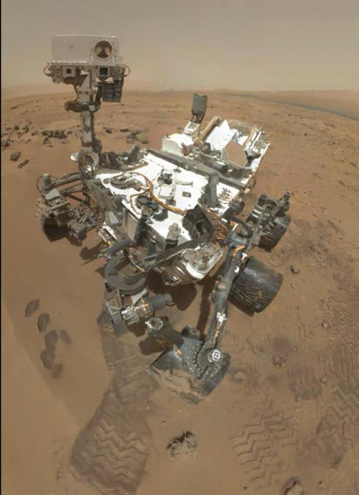
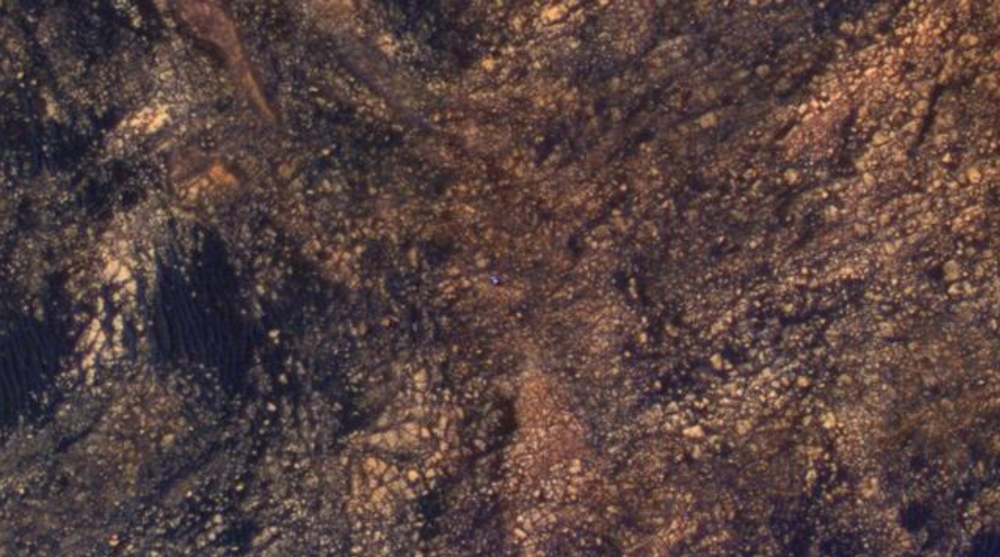
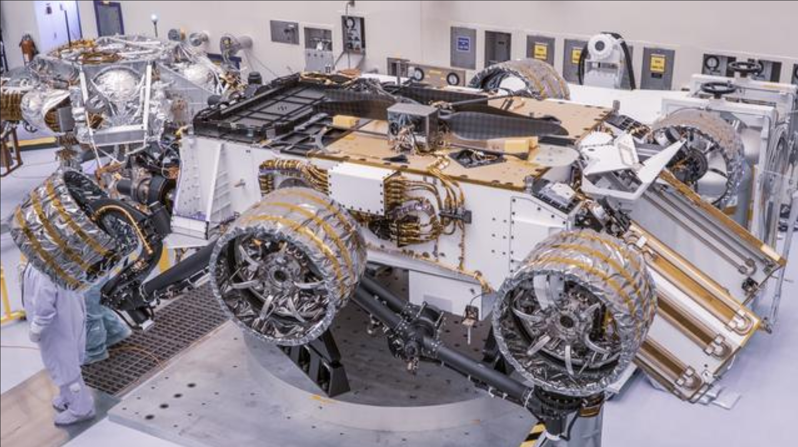
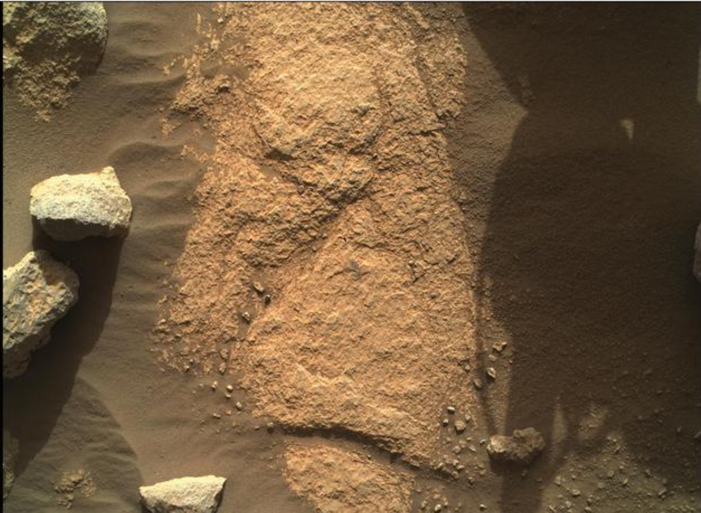
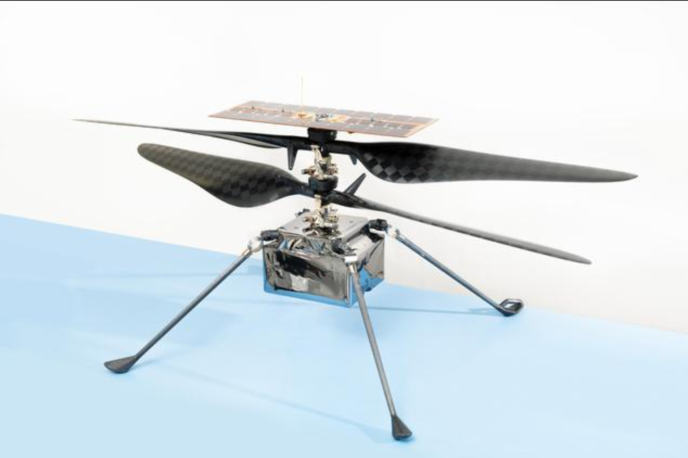

Curiosity

Mission Goals & Overview
Curiosity was designed to determine whether Mars ever had the environmental conditions necessary to support microbial life. Its mission centers on studying the planet’s geology, climate, and the role of water on Mars.
Launch & Landing
Curiosity launched on November 26, 2011, aboard an Atlas V rocket and landed on August 6, 2012, in Gale Crater using NASA’s innovative Sky Crane system.
Major Discoveries
Curiosity discovered ancient lakebeds, organic molecules, and fluctuating methane—clues indicating Mars once had habitable conditions.
Key Technical & Design Features
Curiosity carries a robotic arm, drill, Mastcam, ChemCam laser, radiation detector, and onboard laboratory instruments for soil and rock analysis.

This image highlights the rugged terrain Curiosity explores daily. The rock layers and soil composition help scientists understand how water once shaped Gale Crater.
Perseverance

Mission Goals & Overview
Perseverance searches for signs of ancient microbial life, collects samples for future return to Earth, and tests technologies for human missions.
Launch & Landing
Launched July 30, 2020, Perseverance landed on February 18, 2021, in Jezero Crater—an ancient lakebed with strong potential for past life.
Major Discoveries
Perseverance identified ancient sedimentary rocks and minerals indicating a once-habitable environment. It began the first Martian sample cache.
Key Technical & Design Features
Perseverance includes SHERLOC and PIXL spectrometers, radar, upgraded wheels, a sample caching system, and microphones that recorded audio on Mars.

This environmental image shows layered rocks and sediment deposits that give scientists clues about Mars’ ancient water systems in Jezero Crater.
Ingenuity Helicopter

Ingenuity is a small experimental helicopter that achieved the first powered flight on another planet, proving that aerial exploration is possible on Mars.